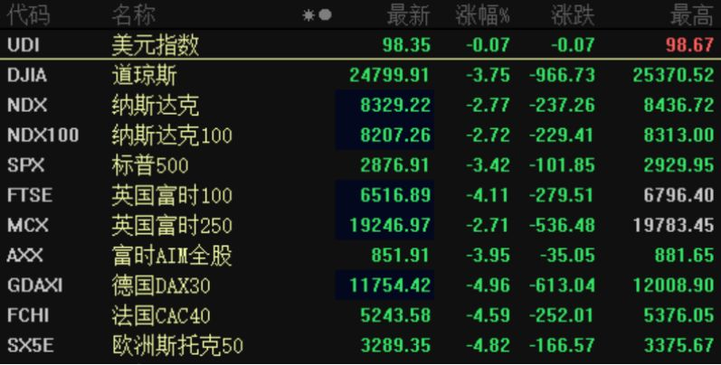
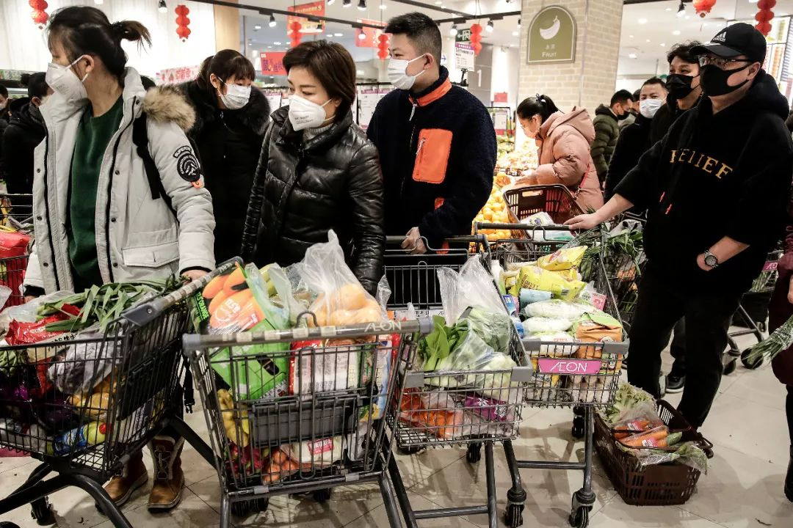
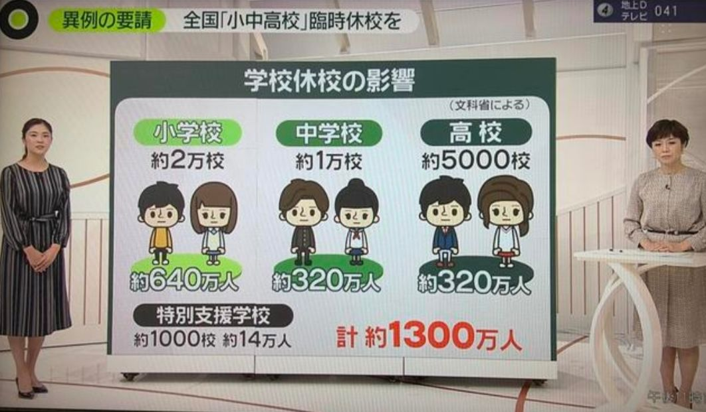
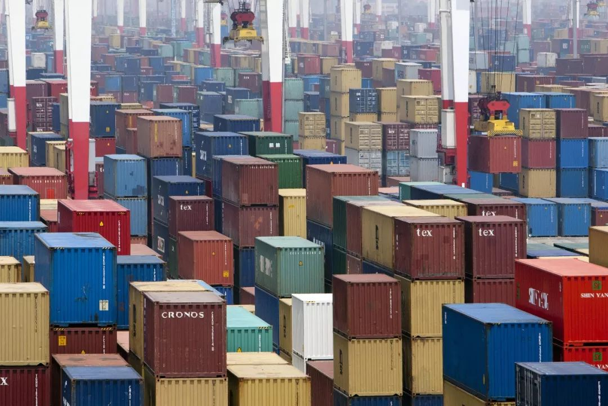

专访世卫组织发言人：做好病毒可能更大范围传播准备，中国防疫能力显著提升
原文链接 备份链接 这是一种全新的病毒，还有很多未知。它代表了一种演进的公共卫生突发事件，我们还会在其他国家看到更多确诊病例。中国对传染病以及卫生突发事件的诊断、治疗和管理能力在过去20年得到了显著的提升。 文 |《财经》记者 江玮 发自 …
文 | 谢九
在中国的疫情逐渐缓和之际，中国之外的疫情却突然爆发升级。2月25日以来，中国境外新增的确诊病例已经超过了中国境内，新冠肺炎疫情进入全球化的2.0阶段。
目前，韩国的新增确诊人数已经超过了中国，日本、伊朗、意大利等国都开始成为重灾区，疫情已经蔓延到全球五大洲40多个国家。世卫总干事谭德塞28日宣布，将新冠肺炎疫情的全球风险级别由“高”上调到“非常高”，多个国家也发出警告，新冠肺炎疫情可能会全球大流行。
随着疫情在全球范围内升级，一向最为敏感的美国股市开始暴跌，在刚刚过去的一周之内跌幅超过12%，在美国股市的带动之下，全球股市也随之大幅跳水。**疫情带来的全球大恐慌，直到最近才刚刚开始。
**

而在此前中国爆发疫情的一个多月时间里，以美国为首的全球股市基本上没有太大的反应，甚至中国A股市场也仅仅只是短期暴跌，很快就强劲反弹。全球资本市场之所以表现淡定，主要原因在于，人们大多认为中国的新冠肺炎疫情虽然会对全球经济带来冲击，但这种影响还是局部性和短期性。一个最明显的例子就是，苹果公司在2月17日发布业绩预警公告，表示受到疫情影响，季度营收目标将无法实现，但是公司股价并没有出现大跌，反而小幅上涨。因为在投资者看来，随着中国疫情得到控制，短期影响很快就会消失。
但是，随着疫情开始逐渐在全球范围内爆发，投资者开始意识到，这场新冠肺炎疫情的影响大大超出了预期，对于经济的冲击将不再只是局部和短期影响，而是可能会升级为全面长期的冲击，对于本已脆弱不堪的全球经济，很难承受如此级别的意外伤害。投资者的恐慌情绪终于决堤，全球资本市场集体暴跌。还是以苹果公司来看，公司在2月17日发布业绩预警时，投资者并没有引起重视，而随着疫情在全球扩散升级，公司股价从2月24日开始大跌，这也是美国股市集体暴跌的开始。

图 | 视觉中国
次贷危机之后，美国股市从2009年开始，迎来一轮长达10年的牛市，在过去10年时间里，虽然也经历很多全球性恐慌性事件，但从没有像近期这样，几天之内持续暴跌，这样的走势，只在2008年次贷危机最黑暗的时刻出现过，很多人开始认为，美国这一轮长达10年的牛市，最终可能要止步于这场新冠肺炎疫情。随着美国股市暴跌，投资者开始买进美国国债避险，美国10年期国债收益率快速下降，跌破了1.4%的警戒线，按照美国经济学界的定义，这意味着发出了经济即将衰退的强烈信号。
以美国为首的全球股市之所以如此恐慌，主要原因在于，投资者担心如果新冠肺炎疫情按照这样的趋势发展下去，全球经济可能会被拖垮。因为刚刚过去的2019年，全球经济原本就已经疲态尽显，主要经济体大都创下近年来最低增速，很多经济学家甚至将当前经济和上世纪30年代的大萧条相提并论。**在这样的背景下，如果新冠肺炎在全球蔓延扩散，已经处于衰退边缘的世界经济无疑会雪上加霜，可能会进入真正的大衰退。
**

如果对当前的全球经济的低迷现状有所了解，就不难理解当前全球资本市场为何如此恐慌。以几个发达经济体来看，刚刚过去的2019年，美国GDP增长了2.3%，不仅远低于3%的预期目标，也创下3年来的新低，随着特朗普的财政刺激和税改红利逐渐消退，美国经济又失去了增长动力，去年下半年以来，美国的很多经济指标就已经发出了衰退的信号，以至于美联储在去年实施了3次降息。
欧洲更是一直深陷泥潭难以自拔，欧债危机以来，欧洲经济就一直处于衰退边缘，随着最近几年国际贸易环境恶化，领头羊德国的经济增速显著下滑，2019年仅仅增长了0.6%。日本经济更是长期徘徊不前，去年仅仅增长了0.7%，尤其是去年四季度，更是陷入负增长。日本原本寄望东京奥运会能够提振经济，结果随着疫情升级，更是面临奥运会被取消的风险，这对日本经济又是一记重创。

日本超市里，部分纸类被抢空
新兴经济体这几年成为全球经济增长的主要贡献者，但是经济增速也是明显放缓。中国经济增速在去年增长了6.1%，创下了20多年来的新低。印度最近几年高速增长，一度成为全球增长冠军，但是从去年开始，印度神话也开始破灭，从将近8%的增速断崖式下跌到5%，也是10多年来的新低。
面对各自的困境，主要经济体都在寻找新的办法和出路，但除了放松财政和货币政策，也并没有太有效的办法，2019年，全球已经有几十个国家集体降息刺激经济，已经不难看出当前全球经济的疲软程度。
如果新冠肺炎疫情不能得到及时控制最终席卷全球，脆弱的全球经济很难承受这样的打击。为了控制疫情，全球各国将会不可避免的收缩经济活动，即使控制程度不如中国，经济扩张的速度也还是会大受影响。为了保护本国居民，各国之间会加强入境管制，国与国之间的很多经济活动将接近停摆，旅游、教育、投资等等都会大幅萎缩。在当前全球化时代，没有一个国家可以脱离别国而单独存在，当全球经济的活力从内到外都开始萎缩，经济增长将会螺旋式下降，如果疫情持续时间过长，全球经济大衰退绝非危言耸听。

在经济大衰退之际，民粹主义势力往往会趁机抬头，从人类发展历史来看，极端情况下，有些国家甚至会通过战争来寻找出路，比如“二战”前的德国等等。而事实证明，战争带来大量的战时需求，的确可以刺激经济增长，比如美国，在30年代大萧条之后，真正拯救美国经济的不是罗斯福新政，而是“二战”，二战爆发后，美国经济在短短几年之内实现翻番，从此确立了世界霸主的地位。
从当前来看，经济危机引发全球战争的可能性并不大，不过，另外一种形式的战争概率并不低，那就是贸易战。刚刚有所缓和的贸易战，会不会在疫情带来的经济压力之下开始重新抬头？无疑是当前值得警惕的事情。

图 | 视觉中国
历史已经证明，发动贸易战争，不仅无助于本国经济，反而会加速全球危机。上世纪30年代的大萧条，一个很重要的导火索是，美国在1930年出台了《关税法》，对海外商品大幅加征关税，平均幅度接近20%。美国的《关税法》引发他国报复，上演了一场全球贸易大战，全球贸易额大幅萎缩，最终加速了美国乃至全球的经济衰退，引发了历史上最著名的那场全球大萧条。
当前这场全球蔓延的新冠肺炎疫情，对人类的智慧也是一个考验。只有全球携手合作，而不是以邻为壑，才是解决这场危机的真正出路。
**作者档案
**

谢九
《三联生活周刊》资深主笔
在嘈杂的时代独立思考

26分钟前


三联生活周刊
个人微信公众号：老九论财经（gh_2556c4453440）
⊙文章版权归《三联生活周刊》所有，欢迎转发到朋友圈，转载开白请联系后台。未经同意，严禁转载至网站、APP等。
点击下图，下单新冠特刊
「准备复工」

*点击阅读原文，进入周刊书店，**购买**【新冠肺炎专刊组合】*
老九论财经
长按二维码向我转账
受苹果公司新规定影响，微信 iOS 版的赞赏功能被关闭，可通过二维码转账支持公众号。
原文链接 备份链接 这是一种全新的病毒，还有很多未知。它代表了一种演进的公共卫生突发事件，我们还会在其他国家看到更多确诊病例。中国对传染病以及卫生突发事件的诊断、治疗和管理能力在过去20年得到了显著的提升。 文 |《财经》记者 江玮 发自 …
原文链接 备份链接 黄女士及其家人是如何“顺利完成进京全流程”的？当前是否存在更多的“黄女士”？这些令人疑惑的问题，有待一天之内即迅速成立的三个调查组，还公众合理合法的结论。 文 | 王仲昀 Anne 2月26日，北京发布的一例由武汉返京 …
原文链接 备份链接 目前包括中国大陆在内，全球已经有41个国家和地区出现了疫情，其中，韩国是中国大陆之外疫情蔓延最快的国家。 尽管如此，世卫组织不希望在“没有谨慎和清晰地分析事实情况之前”仓促宣布疫情为全球“大流行病” 文 |《财经》特派 …
原文链接 备份链接 从一开始，余昌平就想过自己可能会被感染。他是武汉大学人民医院呼吸与危重症医学科的医生，疫情发生后，他成为医院冠状病毒防治专家组的成员。 专家组成员被感染？听起来有点严重。余昌平觉得很正常：“接触那么多病人，总是会感染 …
原文链接 备份链接 疫情持续在中国境外蔓延会恶化市场情绪，美欧股市最近两天持续下跌与此有关。展望未来，资本市场持续上行的希望在于：中国疫情防控企稳，世界其他地区迅速协调行动 文 |《财经》特派华盛顿记者 金焱 《财经》 …